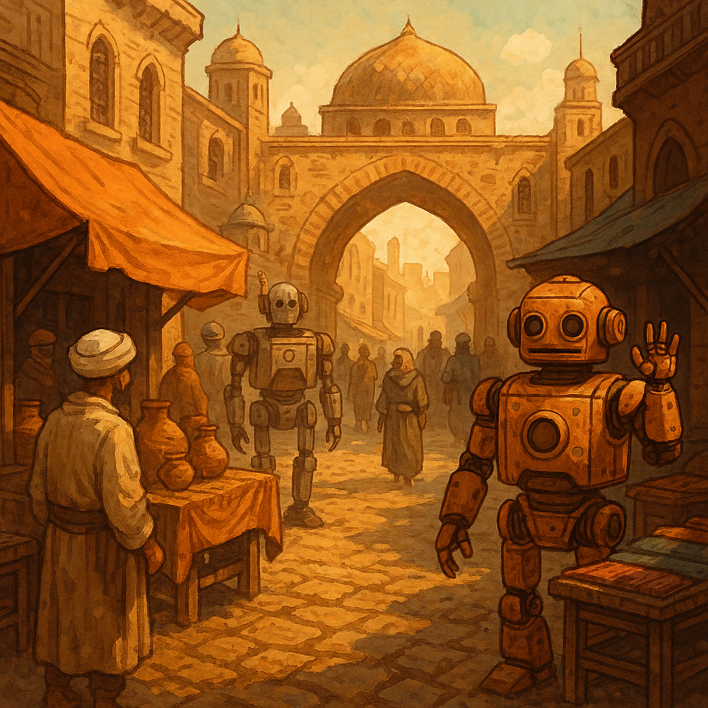

Where the Arab digital world meets, trades, and grows.
Digital Bazaar is a community for Arab builders, founders,product people, marketers, researchers, financiers and curious learners from across MENA and the diaspora. We swap ideas, share opportunities, write essays, and tinker with tools together.
Conversations, writing and tinkering under one tent.
Digital Bazaar isn’t just a chat, a blog, or a GitHub org. It’s all three at once – tied together by the same people and stories.
Conversations & lanes
Focused WhatsApp groups for different kinds of talk: General Chat, Jordanian Expats, Startups & Founders, Software & Engineering, Product & Growth, Management & Leadership, Advice & Mentorship, Jobs and more. Think of it as a souq of ongoing, overlapping conversations.
Articles & field notes
Essays, reflections and notes from people in the Bazaar – on engineering, product, leadership, markets, careers and life. Less “content marketing”, more “here’s what actually happened and what we learned”.
Open source & tools
A GitHub organisation for small tools, bots and experiments that grow out of community needs. Shared infra, shared learning, and low-pressure projects anyone can join when curiosity hits.
A working bazaar, not a broadcast channel.
Most days, the Bazaar looks like a mix of small, specific exchanges and slower, deeper threads. You dip in where it’s relevant, add something useful, then step back out.
- Short questions, real answers. Ask concrete questions from your context: a product decision, a management knot, an infra tradeoff, a career move.
- Stories over takes. We prefer “here’s what we tried and how it went” more than hot takes or generic advice threads.
- Slow-burning threads. Some discussions turn into articles or tools. When something keeps coming up, we write it down or prototype it.
- Skim, don’t try to read everything. The bazaar is always on.
- Reply where you can genuinely help, not everywhere you have an opinion.
- It’s fine to lurk for a while – just introduce yourself when you’re ready.
How we keep the bazaar healthy.
The full rules live on their own page, but the spirit is simple: be decent, bring value, don’t abuse the space.
- Be kind and respectful. We’re here to support and uplift each other in our professional journeys.
- Share knowledge freely. The bazaar thrives on open exchange of ideas, stories and opportunities.
- Keep it constructive. Stay relevant to tech, business and the wider digital ecosystem – no drama for drama’s sake.
- No spam, no hard selling. Share your work naturally and respect everyone’s attention.
- Don’t be an asshole. Zero tolerance for racism, sexism, harassment or toxic behavior of any kind.
Moderation & safety
Moderators reserve the right to remove disruptive members at any time, with or without warning. The goal is not control – it’s keeping the bazaar usable for everyone.
Pull up a chair in the Bazaar.
Introduce yourself, share what you’re working on, and join a lane that fits. The bazaar gets better every time someone brings a real story, question or experiment.